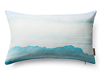

<!DOCTYPE html>
<html>
	<head>
		<meta charset="UTF-8">
		<title>文章内容</title>
		<link rel="stylesheet" type="text/css" href="../css/reset.css"/>
		<link rel="stylesheet" type="text/css" href="../css/clxlcontent.css"/>
		
	</head>
	<body>
		<div class="wrap">
			<!--<h1>当茶遇到酒——习近平的欧洲观</h1>
			<time>2017-03-01</time>
			
			<p>
				茶的含蓄内敛和酒的热烈奔放代表了品味生命、解读世界的两种不同方式。但是，茶和酒并不是不可兼容的，既可以酒逢知己千杯少，也可以品茶品味品人生。——习近平
			</p>
			<p>
				一场大雪把初春的北京装点得格外美丽。2月22日，习近平主席在人民大会堂先后同来访的法国总理卡泽纳夫、意大利总统马塔雷拉会见会谈。
			</p>
			<p>这是春节之后习近平主席首度会晤外宾。在习近平主席新年首访选择瑞士之后，欧洲两个重要国家的领导人又同时访华，凸显出当前形势下中欧对彼此交往合作的重视。</p>-->
		</div>
		
	</body>
	<script src="../js/libs/zepto.min.js" type="text/javascript" charset="utf-8"></script>
    <script src="../js/app/common.js" type="text/javascript" charset="utf-8"></script>
    <script src="../js/app/readcontent.js" type="text/javascript" charset="utf-8"></script>
 
</html>
